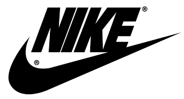

NIKE 
La Nike è una multinazionale statunitense che produce calzature, abbigliamento e accessori sportivi.
Il nome dell'azienda è ispirato alla dea greca della vittoria Nike,una dea alata in grado di muoversi ad alta velocità,
la cui rappresentazione piú famosa, una scultura esposta al Museo del Louvre, è la Nike di Samotracia.
Il marchio ha un logo semplice e rapidamente riconoscibile: il cosiddetto Swoosh, una virgola capovolta e orizzontale.
La società è il piú grande fornitore di attrezzature sportive al mondo.
I maggiori concorrenti sono Adidas, Puma e Under Armour.